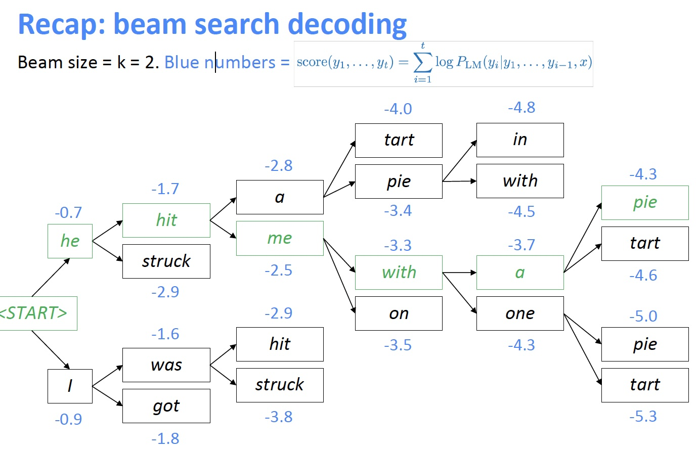
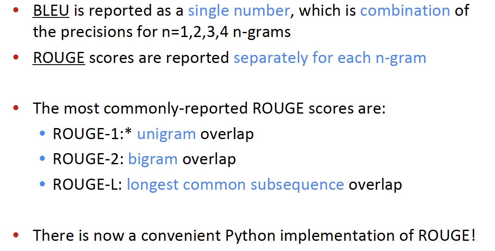
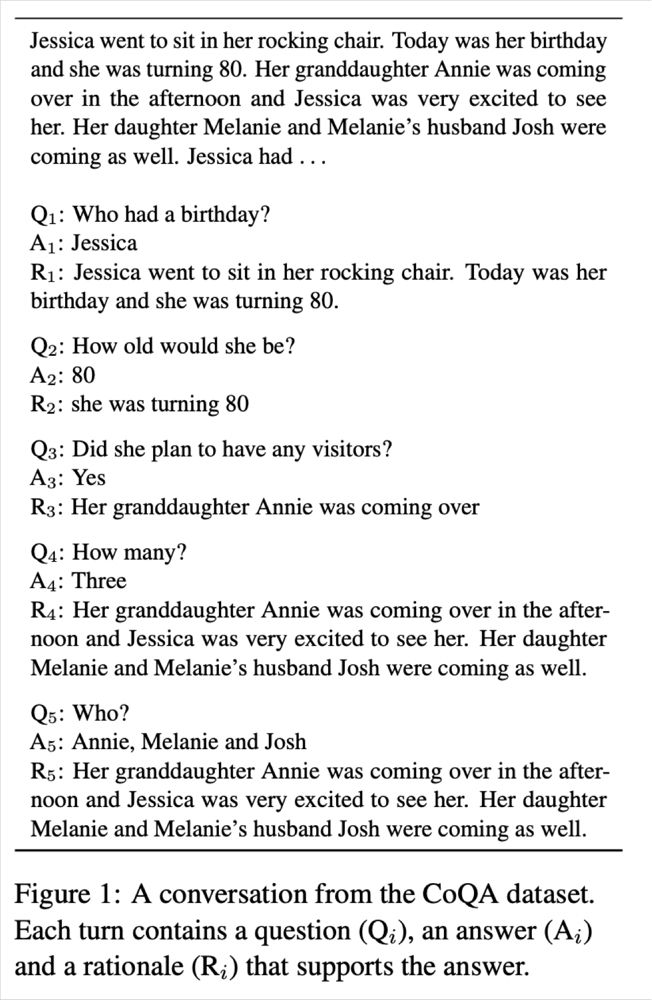
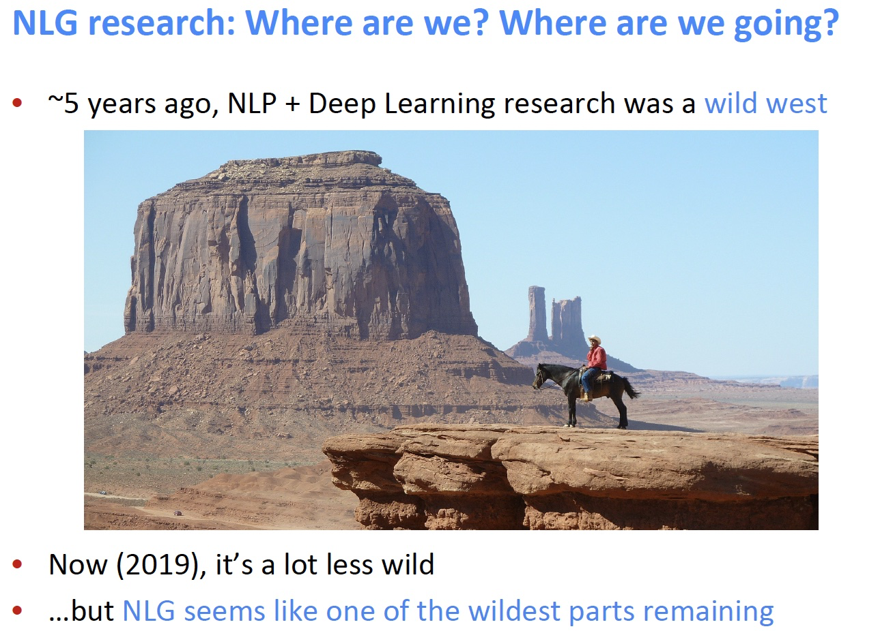

15 Natural Language Generation
Lecture 15 Natural Language Generation¶
Lecture Plan
- Recap what we already know about NLG
- More on decoding algorithms
- NLG tasks and neural approaches to them
- NLG evaluation: a tricky situation
- Concluding thoughts on NLG research, current trends, and the future
Today we’ll be learning about what’s happening in the world of neural approaches to Natural Language Generation (NLG)
Section 1: Recap: LMs and decoding algorithms¶
Natural Language Generation (NLG)
- 自然语言生成指的是我们生成（即写入）新文本的任何设置
- NLG 包括以下成员：
- 机器翻译
- 摘要
- 对话（闲聊和基于任务）
- 创意写作：讲故事，诗歌创作
- 自由形式问答（即生成答案，从文本或知识库中提取）
- 图像字幕
Recap
- 语言建模 是给定之前的单词，预测下一个单词的任务：
- 一个产生这一概率分布的系统叫做 语言模型
-
如果系统使用 RNN，则被称为 RNN-LM
-
条件语言建模 是给定之前的单词以及一些其他输入 x ，预测下一个单词的任务：
- 条件语言建模任务的例子：
- 机器翻译 x=source sentence, y=target sentence
- 摘要 x=input text, y=summarized text
- 对话 x=dialogue history, y=next utterance
Recap: training a (conditional) RNN-LM

- 这是神经机器翻译中的例子
- 在训练期间,我们将正确的(又名引用)目标句子输入解码器，而不考虑 解码器预测的。这种培训方法称为 Teacher Forcing
Recap: decoding algorithms
- 问题：训练条件语言模型后，如何使用它生成文本？
- 答案：解码算法是一种算法，用于从语言模型生成文本
- 我们了解了两种解码算法
- 贪婪解码
- Beam 搜索
Recap: greedy decoding
- 一个简单的算法
- 在每一步中，取最可能的单词（即argmax）
- 将其用作下一个单词，并在下一步中将其作为输入提供
- 继续前进，直到您产生 \text{<END>} 或达到某个最大长度
- 由于缺乏回溯，输出可能很差（例如，不合语法，不自然，荒谬）

Recap: beam search decoding
- 一种旨在通过一次跟踪多个可能的序列，找到高概率序列（不一定是最佳序列）的搜索算法
- 核心思想：在解码器的每一步，跟踪 k 个最可能的部分序列（我们称之为假设）
- k是光束大小
- 达到某个停止标准后，选择概率最高的序列（考虑一些长度调整）

What’s the effect of changing beam size k?
- 小的 k 与贪心解码有类似的问题（k = 1时就是贪心解码）
- 不符合语法，不自然，荒谬，不正确
- 更大的 k 意味着您考虑更多假设
- 增加 k 可以减少上述一些问题
- 更大的 k 在计算上更昂贵
- 但增加 k 可能会引入其他问题：
- 对于NMT，增加 k 太多会降低BLEU评分(Tu et al, Koehnet al)
- beam size 和 BLEU 之间存在最优性之间的区别，高概率序列和高的 BLEU 得分是两件独立的事情
- 这主要是因为大 k 光束搜索产生太短的翻译（即使得分归一化）
- 在闲聊话等开放式任务中，大的 k 会输出非常通用的句子（见下一张幻灯片）
- 对于NMT，增加 k 太多会降低BLEU评分(Tu et al, Koehnet al)
Effect of beam size in chitchat dialogue

- 低 beam size
- 更关于话题但是没有意义的
- 语法差，重复的
- 高 beam size
- 安全的反应
- “正确”的反应
- 但它是通用的，不太相关
Sampling-based decoding
- 纯采样
- 在每个步骤t，从概率分布 P_t 中随机抽样以获取你的下一个单词。
- 像贪婪的解码，但是是采样而不是argmax。
- Top-n 采样
- 在每个步骤 t ，从 P_t 的前 n 个最可能的单词中，进行随机采样（即若V = 10, n = 2，就相当于把选择范围限定在了概率排名前两个的单词，再在这两者之间做采样得到一个单词）
- 与纯采样类似，但截断概率分布
- 此时，n = 1 是贪婪搜索，n = V 是纯采样
- 增加n以获得更多样化/风险的输出
- 减少n以获得更通用/安全的输出
- 这两者都更多比光束搜索更有效率，不用跟踪多个假设
Softmax temperature
- 回顾：在时间步 t ，语言模型通过对分数向量 s \in \mathbb{R}^{|V|} 使用 softmax 函数计算出概率分布 P_t
- 你可以对 softmax 函数时候用温度超参数
- 提高温度 \tau : P_t 变得更均匀
- 因此输出更多样化（概率分布在词汇中）
- 降低温度 \tau : P_t 变得更尖锐
- 因此输出的多样性较少（概率集中在顶层词汇上）
Decoding algorithms: in summary
- 贪心解码 是一种简单的译码方法；给低质量输出
- Beam搜索 (特别是高beam大小)搜索高概率输出
- 比贪婪提供更好的质量，但是如果 Beam 尺寸太大，可能会返回高概率但不合适的输出(如通用的或是短的)
- 抽样方法 来获得更多的多样性和随机性
- 适合开放式/创意代(诗歌,故事)
- Top-n个抽样允许您控制多样性
- Softmax 温度控制 的另一种方式多样性
- 它不是一个解码算法！这种技术可以应用在任何解码算法。
Section 2: NLG tasks and neural approaches to them¶
List of summarization datasets, papers, and codebases: https://github.com/mathsyouth/awesome-text-summarization
Summarization: task definition
任务：给定输入文本x，写出更短的摘要 y 并包含 x 的主要信息
摘要可以是单文档，也可以是多文档
-
单文档意味着我们写一个文档 x 的摘要 y
-
多文档意味着我们写一个多个文档 x_{1}, \ldots, x_{n} 的摘要y
通常 x_{1}, \ldots, x_{n} 有重叠的内容：如对同一事件的新闻文章
在单文档摘要，数据集中的源文档具有**不同长度和风格**
- Gigaword: 新闻文章的前一两句 \to 标题(即句子压缩)
- LCSTS (中文微博)：段落 \to 句子摘要
- NYT, CNN/DailyMail: 新闻文章 \to (多个)句子摘要
- Wikihow (new!): 完整的 how-to 文章 \to 摘要句子
句子简化 是一个不同但相关的任务：将源文本改写为更简单（有时是更短）的版本
- Simple Wikipedia：标准维基百科句子 \to 简单版本
- Newsela：新闻文章 \to 为儿童写的版本
Summarization: two main strategies
抽取式摘要 Extractive summarization
- 选择部分(通常是句子)的原始文本来形成摘要
- 更简单
- 限定性的（无需解释）
抽象式摘要 Abstractive summarization
- 使用自然语言生成技术 生成新的文本
- 更困难
- 更多变（更人性化）
Pre-neural summarization

Diagram credit: Speech and Language Processing, Jurafsky and Martin
- Pre-neural摘要系统大多是抽取式的
- 类似Pre-neural MT，他们通常有一个流水线
- 内容选择 Content selection：选择一些句子
- 信息排序 Information ordering：为选择的句子排序
- 句子实现 Sentence realization：编辑并输出句子序列例如，简化、删除部分、修复连续性问题)
Pre-neural 内容选择 算法
- 句子得分函数 可以根据
- 主题关键词，通过计算如tf-idf等
- 特性，例如这句话出现在文档的哪里
- 图算法 将文档为一组句子(节点)，每对句子之间存在边
- 边的权重与句子相似度成正比
- 使用图算法来识别图中最重要的句子
Summarization evaluation: ROUGE
ROUGE (Recall-Oriented Understudy for Gisting Evaluation)

ROUGE: A Package for Automatic Evaluation of Summaries, Lin, 2004 http://www.aclweb.org/anthology/W04-1013
类似于 BLEU，是基于 n-gram 覆盖的算法，不同之处在于：
- 没有简洁惩罚
- 基于召回率 recall，BLEU 是基于准确率的
- 可以说，准确率对于MT 来说是更重要的(通过添加简洁惩罚来修正翻译过短)，召回率对于摘要来说是更重要的(假设你有一个最大长度限制)，因为需要抓住重要的信息
- 但是，通常使用 F1(结合了准确率和召回率)

Neural summarization (2015 - present)
-
2015: Rush et al. publish the first seq2seq summarization paper
-
单文档摘要摘要是一项翻译任务！
-
因此我们可以使用标准的 seq2seq + attention NMT 方法

A Neural Attention Model for Abstractive Sentence Summarization, Rush et al, 2015 https://arxiv.org/pdf/1509.00685.pdf
- 自2015年以来，有了更多的发展
- 使其更容易复制
- 也防止太多的复制
- 分层/多层次的注意力机制
- 更多的 全局/高级 的内容选择
- 使用 RL 直接最大化 ROUGE 或者其他离散目标（例如长度）
- 复兴 pre-neural 想法(例如图算法的内容选择)，把它们变成神经系统
- 使其更容易复制
Neural summarization: copy mechanisms
- Seq2seq+attention systems 善于生成流畅的输出，但是不擅长正确的复制细节(如罕见字)
- 复制机制使用注意力机制，使seq2seq系统很容易从输入复制单词和短语到输出
- 显然这是非常有用的摘要
- 允许复制和创造给了我们一个混合了抽取/抽象式的方法
- There are several papers proposing copy mechanism variants:
- Language as a Latent Variable: Discrete Generative Models for Sentence Compression, Miao et al, 2016 https://arxiv.org/pdf/1609.07317.pdf
- Abstractive Text Summarization using Sequence-to-sequence RNNs and Beyond, Nallapati et al, 2016 https://arxiv.org/pdf/1602.06023.pdf
- Incorporating Copying Mechanism in Sequence-to-Sequence Learning, Gu et al, 2016 https://arxiv.org/pdf/1603.06393.pdf
- etc


Get To The Point: Summarization with Pointer-Generator Networks, See et al, 2017 https://arxiv.org/pdf/1704.04368.pdf
- 复制机制的大问题
- 他们复制太多
- 主要是长短语，有时甚至整个句子
- 一个原本应该是抽象的摘要系统，会崩溃为一个主要是抽取的系统
- 他们复制太多
- 另一个问题
- 他们不善于整体内容的选择，特别是如果输入文档很长的情况下
- 没有选择内容的总体战略
Neural summarization: better content selection
- 回忆：pre-neural摘要是不同阶段的内容选择和表面实现(即文本生成)
- 标准seq2seq + attention 的摘要系统，这两个阶段是混合在一起的
- 每一步的译码器(即表面实现)，我们也能进行词级别的内容选择(注意力)
- 这是不好的：没有全局内容选择策略
- 一个解决办法：自下而上的汇总
Bottom-up summarization
- 内容选择阶段：使用一个神经序列标注模型来将单词标注为 include / don’t-include
- 自下而上的注意力阶段：seq2seq + attention 系统不能处理 don’t-include 的单词（使用 mask ）
简单但是非常有效！
- 更好的整体内容选择策略
- 减少长序列的复制(即更摘要的输出)
- 因为长序列中包含了很多 don’t-include 的单词，所以模型必须学会跳过这些单词并将那些 include 的单词进行摘要与组合

Neural summarization via Reinforcement Learning

- 使用 RL 直接优化 ROUGE-L
- 相比之下，标准的最大似然(ML)训练不能直接优化ROUGE-L，因为它是一个不可微函数
- 有趣的发现
- 使用RL代替ML取得更高的ROUGE分数，但是人类判断的得分越低
- 混合模型最好
A Deep Reinforced Model for Abstractive Summarization, Paulus et al, 2017 https://arxiv.org/pdf/1705.04304.pdf
Dialogue
“对话”包括各种各样的设置
- 面向任务的对话
- 辅助 (如客户服务、给予建议，回答问题，帮助用户完成任务，如购买或预订)
- 合作 (两个代理通过对话在一起解决一个任务)
- 对抗 (两个代理通过对话完成一个任务)
- 社会对话
- 闲聊 (为了好玩或公司)
- 治疗/精神健康
Pre- and post-neural dialogue
-
由于开放式自由NLG的难度，pre-neural对话系统经常使用预定义的模板，或从语料库中检索一个适当的反应的反应
-
摘要过去的研究，自2015年以来有很多论文将seq2seq方法应用到对话，从而导致自由对话系统兴趣重燃
-
一些早期seq2seq对话文章包括
-
A Neural Conversational Model, Vinyals et al, 2015
-
Neural Responding Machine for Short-Text Conversation, Shang et al, 2015
-
Seq2seq-based dialogue
然而，很快他们就明白简单的应用标准seq2seq +attention 的方法在对话(闲聊)任务中有严重的普遍缺陷
- 一般性/无聊的反应
- 无关的反应(与上下文不够相关)
- 重复
- 缺乏上下文(不记得谈话历史)
- 缺乏一致的角色人格
Irrelevant response problem
- 问题：seq2seq经常产生与用户无关的话语
- 要么因为它是通用的(例如,“我不知道”)
- 或因为改变话题为无关的一些事情
- 一个解决方案：不是去优化输入 S 到回答 T 的映射来最大化给定 S 的 T 的条件概率，而是去优化输入S 和回复 T 之间的最大互信息Maximum Mutual Information (MMI)，从而抑制模型去选择那些本来就很大概率的通用句子
Genericness / boring response problem
- 简单的测试时修复
- 直接在Beam搜索中增大罕见字的概率
- 使用抽样解码算法而不是Beam搜索
- 条件修复
- 用一些额外的内容训练解码器(如抽样一些内容词并处理)
- 训练 retrieve-and-refine 模型而不是 generate-from-scratch 模型
- 即从语料库采样人类话语并编辑以适应当前的场景
- 这通常产生更加多样化/人类/有趣的话语！
Repetition problem
简单的解决方案
- 直接在 Beam 搜索中禁止重复n-grams
- 通常非常有效
- 更复杂的解决方案
- 在seq2seq中训练一个覆盖机制，这是客观的，可以防止注意力机制多次注意相同的单词
- 定义训练目标以阻止重复
- 如果这是一个不可微函数生成的输出，然后将需要一些技术例如RL来训练
Lack of consistent persona problem
- 2016年，李等人提出了一个seq2seq对话模式，学会将两个对话伙伴的角色编码为嵌
- 生成的话语是以嵌入为条件的
- 最近有一个闲聊的数据集称为PersonaChat，包括每一次会话的角色(描述个人特质的5个句子的集合)
- 这提供了一种简单的方式，让研究人员构建 persona-conditional 对话代理
A Persona-Based Neural Conversation Model, Li et al 2016, https://arxiv.org/pdf/1603.06155.pdf
Personalizing Dialogue Agents: I have a dog, do you have pets too?, Zhang et al, 2018 https://arxiv.org/pdf/1801.07243.pdf
Negotiation dialogue
2017年，Lewis et al收集谈判对话数据集
- 两个代理协商谈判对话(通过自然语言)如何分配一组项目
- 代理对项目有不同的估值函数
- 代理人会一直交谈直到达成协议

Deal or No Deal? End-to-End Learning for Negotiation Dialogues, Lewis et al, 2017 https://arxiv.org/pdf/1706.05125.pdf
- 他们发现用标准的最大似然(ML)来训练seq2seq系统的产生了流利但是缺乏策略的对话代理
- 和Paulus等的摘要论文一样，他们使用强化学习来优化离散奖励(代理自己在训练自己)
- RL 的基于目的的目标函数与 ML 目标函数相结合
- 潜在的陷阱：如果两两对话时，代理优化的只是RL目标，他们可能会偏离英语

在测试时，模型通过计算 rollouts，选择可能的反应：模拟剩余的谈话和预期的回报
-
2018年，Yarats 等提出了另一个谈判任务的对话模型，将策略和NLG方面分开
-
每个话语 x_t 都有一个对应的离散潜在变量 z_t
- z_t 学习成为一个很好的预测对话中的未来事件的预测器(未来的消息，策略的最终收获)，但不是 x_t 本身的预测器
- 这意味着 z_t 学会代表 x_t 对对话的影响，而不是 x_t 的话
- 因此 z_t 将任务的策略方面从 NLG方面分离出来
- 这对可控制性、可解释性和更容易学习策略等是有用的
Hierarchical Text Generation and Planning for Strategic Dialogue, Yarats et al, 2018 https://arxiv.org/pdf/1712.05846.pdf

Conversational question answering: CoQA
- 一个来自斯坦福NLP的新数据集
- 任务：回答关于以一段对话为上下文的文本的问题
- 答案必须写摘要地(不是复制)
- QA / 阅读理解任务，和对话任务

CoQA: a Conversational Question Answering Challenge, Reddy et al, 2018 https://arxiv.org/pdf/1808.07042.pdf
Storytelling
- 神经讲故事的大部分工作使用某种提示
- 给定图像生成的故事情节段落
- 给定一个简短的写作提示生成一个故事
- 给定迄今为止的故事，生成故事的下一个句子（故事续写）
- 这和前两个不同，因为我们不关心系统在几个生成的句子上的性能
- 神经故事飞速发展
- 第一个故事研讨会于2018年举行
- 它举行比赛(使用五张图片的序列生成一个故事)
Generating a story from an image

有趣的是，这并不是直接的监督图像标题。没有配对的数据可以学习。
Generating Stories about Images, https://medium.com/@samim/generating-stories-about-images-d163ba41e4ed
- 问题：如何解决缺乏并行数据的问题
- 回答：使用一个通用的 sentence-encoding space
- Skip-thought 向量是一种通用的句子嵌入方法
- 想法类似于我们如何学通过预测周围的文字来学习单词的嵌入
- 使用 COCO (图片标题数据集)，学习从图像到其标题的 Skip-thought 编码的映射
- 使用目标样式语料库(Taylor Swift lyrics)，训练RNN-LM， 将Skip-thought向量解码为原文
- 把两个房在一起
Skip-Thought Vectors, Kiros 2015, https://arxiv.org/pdf/1506.06726v1.pdf
Generating a story from a writing prompt
- 2018年，Fan 等发布了一个新故事生成数据集 collected from Reddit’s WritingPrompts subreddit.
- 每个故事都有一个相关的简短写作提示

Fan 等也提出了一个复杂的 seq2seq prompt-to-story 模型
Hierarchical Neural Story Generation, Fan et al, 2018 https://arxiv.org/pdf/1805.04833.pdf
- convolutional-based
- 这使它的速度比RNN-based seq2seq
- 封闭的多头多尺度的self-attention
- self-attention 对于捕获远程上下文而言十分重要
- 门控允许更有选择性的注意机制
- 不同的注意力头在不同的尺度上注意不同的东西——这意味着有不同的注意机制用于检索细粒度和粗粒度的信息
- 模型融合
- 预训练一个seq2seq模型，然后训练第二个 seq2seq 模型访问的第一个 model 的隐状态
- 想法是，第一seq2seq模型学习通用LM，第二个model学习基于提示的条件
结果令人印象深刻
-
与提示相关
-
多样化，并不普通
-
在文体上戏剧性
但是
- 主要是氛围/描述性/场景设定，很少是事件/情节
- 生成更长时，大多数停留在同样的想法并没有产生新的想法——一致性问题
Challenges in storytelling
由神经LM生成的故事听起来流畅…但是是曲折的，荒谬的，情节不连贯的
缺失的是什么？
LMs对单词序列进行建模。故事是事件序列
- 为了讲一个故事，我们需要理解和模拟
- 事件和它们之间的因果关系结构
- 人物，他们的个性、动机、历史、和其他人物之间的关系
- 世界(谁、是什么和为什么)
- 叙事结构(如说明 \to 冲突 \to 解决)
- 良好的叙事原则(不要引入一个故事元素然后从未使用它)
Event2event Story Generation


Event Representations for Automated Story Generation with Deep Neural Nets, Martin et al, 2018
https://www.aaai.org/ocs/index.php/AAAI/AAAI18/paper/view/17046/15769
Structured Story Generation

Strategies for Structuring Story Generation, Fan et al, 2019 https://arxiv.org/pdf/1902.01109.pdf
Tracking events, entities, state, etc.
- 旁注：在神经NLU(自然语言理解)领域，已经有大量关于跟踪事件/实体/状态的工作
- 例如，Yejin Choi’s group* 很多工作在这一领域
- 将这些方法应用到 NLG是更加困难的
- 如果你缩小范围，则更可控的
- 不采用自然语言生成开放域的故事，而是跟踪状态
- 生成一个配方(考虑到因素)，跟踪因素的状态
Tracking world state while generating a recipe
- 过程神经网络：给定因素，生成配方指示
- 显式跟踪所有因素的状态，并利用这些知识来决定下一步要采取什么行动

Simulating Action Dynamics with Neural Process Networks, Bosselut et al, 2018 https://arxiv.org/pdf/1711.05313.pdf
Poetry generation: Hafez
-
Hafez：Ghazvininejad et al 的诗歌系统
-
主要思想：使用一个有限状态受体(FSA)来定义所有可能的序列，服从希望满足的节奏约束
-
然后使用FSA约束RNN-LM的输出
例如
- 莎士比亚的十四行诗是14行的iambic pentameter
- 所以莎士比亚的十四行诗的FSA是 ((01)^5)^{14}
- 在Beam搜索解码中，只有探索属于FSA的假设
Generating Topical Poetry, Ghazvininejad et al, 2016 http://www.aclweb.org/anthology/D16-1126
Hafez: an Interactive Poetry Generation System, Ghazvininejad et al, 2017 http://www.aclweb.org/anthology/P17-4008
- 全系统
- 用户提供主题字
- 得到一个与主题相关的词的集合
- 识别局部词语押韵。这将是每一行的结束
- 使用受制于FSA的RNN-LM生成这首诗
- RNN-LM向后(自右向左)。这是必要的,因为每一行的最后一个词是固定的。

在后续的一篇论文中，作者制作了系统交互和用户可控
控制方法很简单：在Beam搜索中，增大具有期望特征的单词的分数
Poetry generation: Deep-speare
更多的诗歌生成的端到端方法(lau等)
三个组件
- 语言模型
- pentameter model
- rhyme model 韵律模型……
作为一个多任务学习问题共同学习
- 作者发现 meter 和押韵是相对容易的，但生成的诗歌上有些缺乏“情感和可读性”

Deep-speare: A joint neural model of poetic language, meter and rhyme, Lau et al, 2018 http://aclweb.org/anthology/P18-1181
Non-autoregressive generation for NMT
Non-Autoregressive Neural Machine Translation, Gu et al, 2018 https://arxiv.org/pdf/1711.02281.pdf
- 2018年,顾等发表了“Non-autoregressive 神经机器翻译”模型
- 意义：它不是根据之前的每个单词，从左到右产生翻译
- 它并行生成翻译
- 这具有明显的效率优势，但从文本生成的角度来看也很有趣
- 架构是基于Transformer 的；最大的区别是，解码器可以运行在测试时并行

Section 3: NLG evaluation¶
Automatic evaluation metrics for NLG
基于词重叠的指标(BLEU，ROUGE，METROR，F1，等等)
- 我们知道他们不适合机器翻译
- 对于摘要而言是更差的评价标准，因为摘要比机器翻译更开放
- 不幸的是，与抽象摘要系统相比，提取摘要系统更受ROUGE青睐
- 对于对话甚至更糟，这比摘要更开放
- 类似的例子还有故事生成
Word overlap metrics are not good for dialogue
How NOT To Evaluate Your Dialogue System: An Empirical Study of Unsupervised Evaluation Metrics for
Dialogue Response Generation, Liu et al, 2017 https://arxiv.org/pdf/1603.08023.pdf

上图展示了 BLEU-2、Embedding average 和人类评价的相关性都不高
Why We Need New Evaluation Metrics for NLG, Novikova et al, 2017 https://arxiv.org/pdf/1707.06875.pdf

Automatic evaluation metrics for NLG
- 困惑度？
- 捕捉你的LM有多强大，但是不会告诉你关于生成的任何事情(例如，如果你的困惑度是未改变的，解码算法是不好的)
-
词嵌入基础指标？
- 主要思想：比较词嵌入的相似度(或词嵌入的均值)，而不仅仅是重叠的单词。以更灵活的方式捕获语义。
- 不幸的是,仍然没有与类似对话的开放式任务的人类判断，产生很好的联系
-
我们没有自动指标充分捕捉整体质量(即代表人类的质量判断)
- 但我们可以定义更多的集中自动度量来捕捉生成文本的特定方面
- 流利性(使用训练好的LM计算概率)
- 正确的风格(使用目标语料库上训练好的LM的概率)
- 多样性(罕见的用词，n-grams 的独特性)
- 相关输入(语义相似性度量)
- 简单的长度和重复
- 特定于任务的指标，如摘要的压缩率
- 虽然这些不衡量整体质量，他们可以帮助我们跟踪一些我们关心的重要品质
Human evaluation
- 人类的判断被认为是黄金标准
- 当然，我们知道人类评价是缓慢而昂贵的
- 但这些问题？
- 假如你获得人类的评估：人类评估解决你所有的问题吗？
- 不！
- 进行人类有效评估非常困难
- 人类
- 是不一致的
- 可能是不合逻辑的
- 失去注意力
- 误解了你的问题
- 不能总是解释为什么他们会这样做
Detailed human eval of controllable chatbots
- 在聊天机器人项目上工作的个人经验（PersonaChat）
- 我们研究了可控性（特别是控制所产生的话语，如重复，特异性，回应相关性和问题询问）
What makes a good conversation? How controllable attributes affect human judgments,
See et al, 2019 https://arxiv.org/pdf/1902.08654.pdf

-
如何要求人的质量判断？
-
我们尝试了简单的整体质量（多项选择）问题，例如：
- 这次对话有多好？
- 这个用户有多吸引人？
- 这些用户中哪一个给出了更好的响应？
●您想再次与该用户交谈吗？
●您认为该用户是人还是机器人？
主要问题：
- 必然非常主观
- 回答者有不同的期望；这会影响他们的判断
- 对问题的灾难性误解（例如“聊天机器人非常吸引人，因为它总是回写”）
- 总体质量取决于许多潜在因素；他们应该如何被称重和/或比较？
最终，我们设计了一个详细的人类评价体系分离的重要因素，有助于整体chatbot质量

发现：
- 控制重复对于所有人类判断都非常重要
- 提出更多问题可以提高参与度
- 控制特异性（较少的通用话语）提高了聊天机器人的吸引力，趣味性和感知的听力能力。
- 但是，人类评估人员对风险的容忍度较低（例如无意义或非流利的输出）与较不通用的机器人相关联
-
总体度量“吸引力”（即享受）很容易最大化 - 我们的机器人达到了近乎人性化的表现
-
整体度量“人性化”（即图灵测试）根本不容易最大化 - 所有机器人远远低于人类表现
- 人性化与会话质量不一样！
- 人类是次优的会话主义者：他们在有趣，流利，倾听上得分很低，并且问的问题太少
Possible new avenues for NLG eval?
- 语料库级别的评价指标
- 度量应独立应用于测试集的每个示例，或整个语料库的函数
- 例如，如果对话模型对测试集中的每一个例子回答相同的通用答案，它应该被惩罚
- 评估衡量多样性安全权衡的评估指标
- 免费的人类评估
- 游戏化：使任务（例如与聊天机器人交谈）变得有趣，这样人类就可以为免费提供监督和隐式评估，作为评估指标
- 对抗性鉴别器作为评估指标
- 测试NLG系统是否能愚弄经过训练能够区分人类文本和AI生成的文本的识别器
Section 4: Thoughts on NLG research, current trends, and the future¶
Exciting current trends in NLG
- 将离散潜在变量纳入NLG
- 可以帮助在真正需要它的任务中建模结构，例如讲故事，任务导向对话等
- 严格的从左到右生成的替代方案
- 并行生成，迭代细化，自上而下生成较长的文本
- 替代teacher forcing的最大可能性培训
- 更全面的句子级别的目标函数（而不是单词级别）

Neural NLG community is rapidly maturing
- 在NLP+深度学习的早期，社区主要将成功的非机动车交通方法转移到NLG任务中。
- 现在，越来越多的创新NLG技术出现，针对非NMT生成环境。
- 越来越多（神经）NLG研讨会和竞赛，特别关注开放式NLG
- NeuralGen workshop
- Storytelling workshop
- Alexa challenge
- ConvAI2 NeurIPS challenge
- 这些对于组织社区提高再现性、标准化评估特别有用
- 最大障碍是评估
8 things I’ve learnt from working in NLG
- 任务越开放，一切就越困难
- 约束有时是受欢迎的
- 针对特定改进的目标比旨在提高整体生成质量更易于管理
- 如果你使用一个LM作为NLG：改进LM（即困惑）最有可能提高生成质量
- 但这并不是提高生成质量的唯一途径
- 多看看你的输出
- 你需要一个自动度量，即使它是不受影响的
- 您可能需要几个自动度量
- 如果你做了人工评估，让问题尽可能的集中
- 在今天的NLP + 深度学习和 NLG中，再现性是一个巨大的问题。
- 请公开发布所有生成的输出以及您的论文
- 在NLG工作可能很令人沮丧，但也很有趣

Reference¶
以下是学习本课程时的可用参考书籍：
《基于深度学习的自然语言处理》 （车万翔老师等翻译）
以下是整理笔记的过程中参考的博客：
斯坦福CS224N深度学习自然语言处理2019冬学习笔记目录 (课件核心内容的提炼，并包含作者的见解与建议)
斯坦福大学 CS224n自然语言处理与深度学习笔记汇总 这是针对note部分的翻译